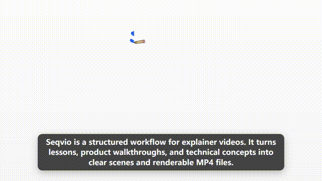

Whiteboard primitives
Draw text, rough shapes, images, icons, and hand-timed visual steps without starting from a blank video canvas.
Open-source explainer video toolkit
Whiteboard explainer videos from React/TSX.
Create narrated whiteboard-style explainers with scenes, narration metadata, captions, QA snapshots, and local MP4 rendering in one source-controlled workflow.
Built for lessons, product walkthroughs, technical diagrams, and agent-generated explainers.
Workflow
Keep the moving parts of an explainer video close to the source: layout, timing, narration, captions, and render settings.
Why Seqvio
Draw text, rough shapes, images, icons, and hand-timed visual steps without starting from a blank video canvas.
Extract narration metadata, synthesize voiceover, align captions, and keep scene timing version-controlled.
Validate storyboard IR, compile scene plans into TSX, and give agents reusable blocks and frame specs.
Demo
This overview was authored as a TSX composition, paired with narration metadata, and rendered locally.
Styles

For lessons, technical concepts, and step-by-step explanations.
Workshop-style layouts with notes, pins, tape, and rough organization.
Browser frames, screenshot placeholders, cursor paths, titles, and callouts.
Local rendering
Seqvio uses Puppeteer and FFmpeg under the hood. Generate key-frame QA snapshots before spending time on a full render.
seqvio-render \
--component examples/compositions/seqvio-overview-en.tsx \
--output output/seqvio-overview-en.mp4 \
--preset finalScope
Seqvio is not trying to replace Remotion, Premiere, or a full timeline editor. It is focused on one narrower job: repeatable narrated explainer videos, especially whiteboard-style educational and product communication videos.
Try it
The renderer CLI creates videos. The optional agent skill teaches coding agents how to author and render Seqvio compositions.
npm install -g @seqvio/renderer
seqvio-render --helpnpx skills add makesynt/seqvio --skill seqvio -a codex -y